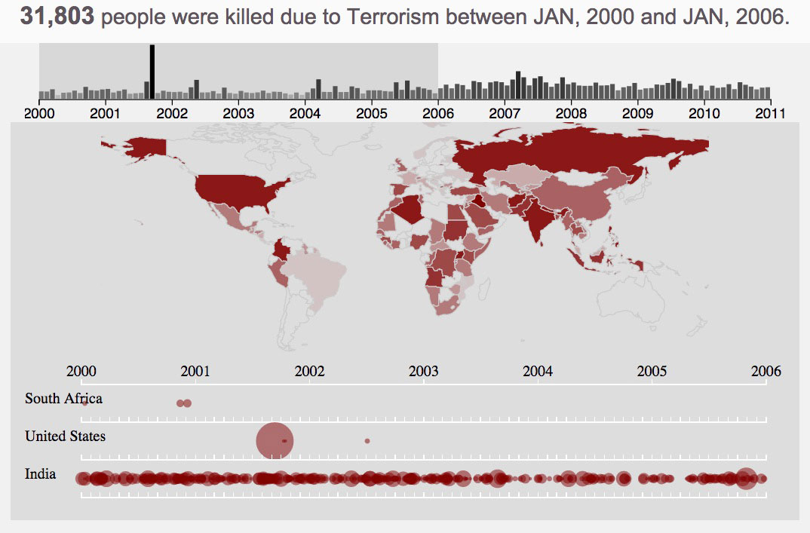
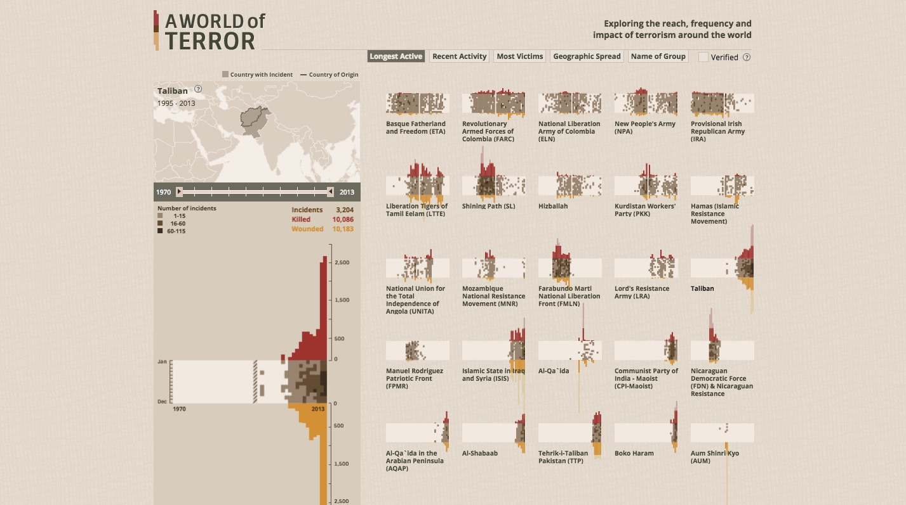
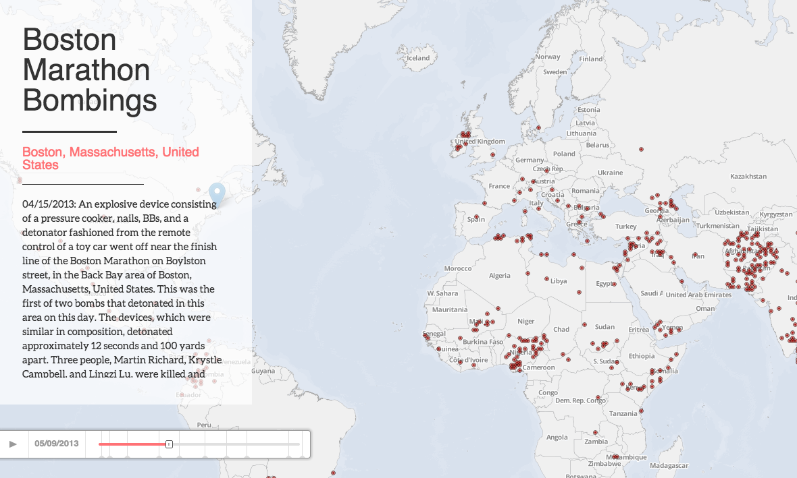
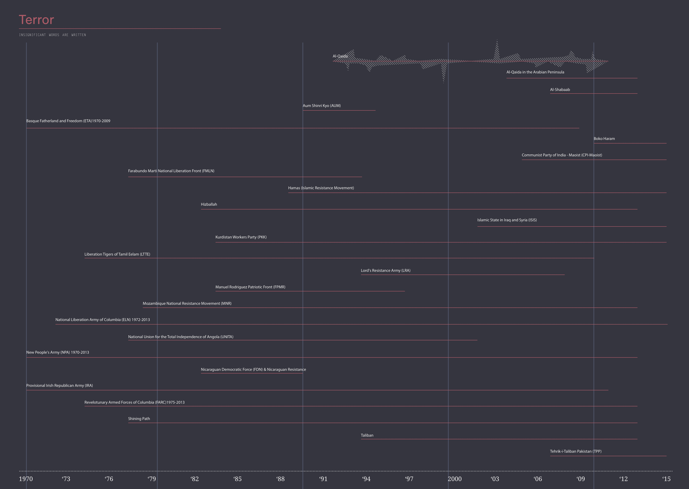
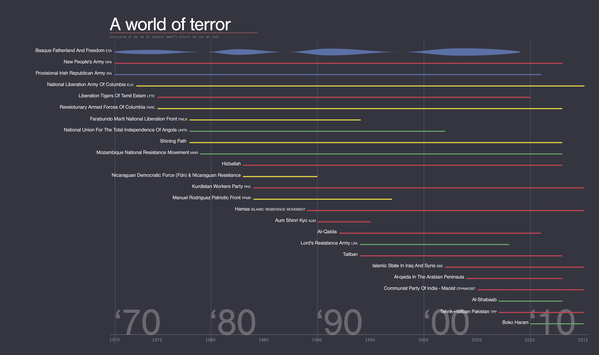
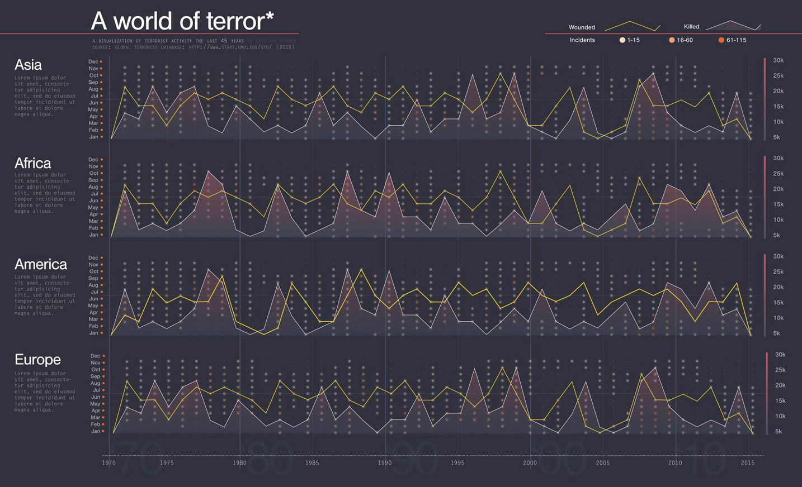

The greatest value of a picture is when it forces us to notice what we never expected to see.
- John W. Tukey
This website cover the work from the project in the module Visual Thinking and Visualization at the Department of Computer Science at UCT the fall 2015. For the project we chose to do a visualization of terror. Terrorism is a concept that knows no either cultural nor geographical bounds, and a data visualization on this topic would therefore of relevance of all over the world.
Our visualization is using a dataset that comes from the National Consortium for the Study of Terrorism and Responses to Terrorism's (START) Global Terrorism Database (GTD), which includes information on terrorist events around the world from 1970 through 2013. “It is currently the most comprehensive unclassified database on over 125,000 terrorist events”.
Each of the events consist attributes like date, location, the number of people who were killed and wounded, which weapon that was use, who the target was and many other attributes. Some of the entities have up to 134 attributes.
We studied the dataset before deciding on our visual queries. As a general pattern, many of the special attributes were empty. Because of these inconsistencies, we only worked with the attributes that were populated in every incident. Another thing that is worth noticing is that in 1993 GTD provides no data, due to loss of data in an office move.
Our design process in this project started with a search. We analyzed other visualizations on the topic of terrorism and similar subjects. Next step is exploration, where we played around with the data, sketched and designed a draft solution. We presented the first solution in a prototype evaluation and got suggested improvements for our visualization. After this first iteration, we started improving our design. By combining feedback with new ideas and inspiration we finally finalized our visualization.
In the creation of a visualization it is really important to do a thorough analysis of existing visualizations. By doing this you avoid "reinventing the wheel", you familiarize yourself with the domain and you get a feeling of what is working and what is not. We have found three other visualizations that we have taken a lot of inspiration from, and which we will present in the following section.
For inspiration for our overview of the data we looked at a visualization that is called Global Terrorism Visualization and was made by Chaoyu Yang and Aniket Handa who have developed a application for exploring the trends and events that shaped the history due to Terrorism. Their visualization consists of a map view together with a bar chart graph of the total number of killed per year as well as a more detailed view of countries.
Figure 2: Global Terrorism Visualization, a vizualization by Chaoyu Yang and Aniket Handa.
The ability to explore the data is done well in this visualization. You both have the opportunity to focus the timeline as well as choosing different countries to explore further or compare to others. We have used this in our design, but with regions instead of countries.
A World of Terror is a graphical look at the 25 most impactful terrorist organizations since 1970. This visualization was made by Periscopic, and is using the same data that we are using from GTD.
Figure 1: A World of Terror, a vizualization by Periscopic.
The visualization presents a lot of information at once, by showing all the data at one single page. They have made this possible by grouping the different groups on the right hand side, while having a panel with further information on the left hand side. They also offer the possibility of grouping the different terror groups by various attributes, for instance by “longest active group”. By doing so they have made it possible for the user to speed up visual queries as well as getting an overview while having the opportunity to zoom and filter. What we found hard in this grouping, was to compare groups that have approximately the same “impact”. The use of a mini map to show where in the world the attacks took place is also a good feature.
Each terrorist group consists of a rectangle where both dimensions represent time. The width is a timeline from 1970 to 2013, and the height stretches from December to January. Weirdly enough it is not the other from January to December. The number of incidents is represented by a gray square in the given month of the specific year. The intensity of the square indicates the number of incidents in that given month. Above and below the incident rectangle they have placed colored bar charts indicating the total number of victims in a given year - killed above and wounded below. We found this hard to compare and have tried to improve in our design.
The visualization uses a brown color theme, with red and yellow as contrast colors to highlight some information and make it pop slightly out. By using red and yellow whom are both close to brown (they are each "next to" brown on the color scale), this contrast gets well balanced and the page as a whole is visually appealing to look at. Red is used to represent the number of killed while yellow is used to represent the number of wounded, this makes sense in both cases, as red is often a symbol of danger while yellow can be seen as a intermediate step before danger. Traffic lights have taught us this with great effect.
Global Terrorism 2013, is a data visualization that is highlighting notable terror attacks that happened in 2013. The different incidents are shown in the information box along with a symbol on the map of where that incident happened. This visualization is interactive to the extent that you can drag the timeline and as the year goes by the different incidents is shown in the box. You have to stop the time in order to read about the terror incident.
Figure 3: Global Terrorism 2013 (click image to view large)
What we like about this is that they are showing and highlighting specific events. We got the idea of adding a frame of reference to our visualization, and maybe adding specific famous events could work as that. That is why we wanted to analys how this visualization is doing it.
What we like about this is that while the specific event is shown in the box, the map shows where in the world the terror incident happened, this makes it easier for people to understand what and where. We also like the box of information, but we do not like it as a static thing where all the information in the visualization is stored in it. We would use this box for more "details on command". What we especially do not like about this box is how it occludes with the map behind.
This specific visualization is only showing 2013 but could easily include more years as well. But in this case it is necessary to add some more visualization in order to get an overview. This visualization is great for information about a specific event, but not so good for overview. This is something we will try to improve in our visualization.
Initially we did not have any concrete problem that we wanted to solve. This made it hard to decide upon what data we wanted to present, and also how we wanted to present it.
After looking at and analyzing existing visualizations we decided that a good place to start would be to improve the ability to compare different terror groups activities. As a constraint, we wanted to stay away from using maps. In this design we decided to put all of the terror groups alphabetically and present when they have been active on a timeline as well as some information on how many they have killed and wounded. Although the concept of an alphabetical ordering is appealing, we realized it was a bad fit, because things got really messy with elements themselves not being ordered (on length for example).
Figure 4: Picture of our first design iteration (click image to view large)
As seen in the figure above, it is hard to see when the groups were active so we decided to arrange them by when they were active rather than alphabetically. We also changed the color by where in the world the groups are from, so that blue means that the group is from Europe etc. The timeline has been made more clear by increasing the size of each decade.
Figure 5: Second iteration (click image to view large)
After this iteration we discovered that by using the data from the 25 biggest terrorist groups we only cover 56% of total fatalities. We decided to not focus on the groups and rather focus on geographical regions. This is what we presented in the prototype evaluation. It focuses on different regions and representing the number of killed and wounded as well as the number of incidents per month per year.
Figure 6: Third iteration and first prototype (click image to view large)
During the design process we have had one prototype evaluation in the class, where we presented our design and got suggested changes and improvements. We got a lot of good ideas from this session, which is hopefully reflected in the final design.
We have used the Shneiderman's mantra in regards to interactivity, by adding more aggregated worldview information for the overview. We decided to add a map of the world along with a timeline where you can see the total numbers of incidents along with the number of dead and wounded, on a yearly basis. We have added a slider on the timeline for further exploration. The map is reflecting which regions that have been targeted for the period that is chosen by the red slider below the timeline. The slider on the timeline works well as a zoom and filter function for updating the map (but not the graphs). We also want the feature of selecting a specific region . When doing so we display more information about it below the main visualization, using a view similar to the one from our third iteration. Because this was intended for the web, we imagined an "article view" which allows the interested user to dig even deeper. This gives the visualization both a narrative, and more details on demand .
For more details on demand we want to add another suggested change that we got from the prototype evaluation, a frame of reference For instance marking 9/11 with a specific symbol. Here we also played with the idea of when you hover over a “landmark” symbol everything that is lower than that will be grayed out and then you can see other events that were greater than that “famous” event. We did not end up with this functionality.
Another improvement that we have added are symbols . We have added symbols for the frame of reference feature representing different target types or landmarks that reflect that terror incident. We have also changed from intensity to shapes with different elongation when representing the number of incidents per month.
Figure 5: Second iteration (click image to view large)
Figure 7: Symbols for target type (click image to view large)
Introduction to final design
Users have the ability to click both regions on the map, and certain peaks on the graph. The latter is illustrated here.
I our final design we have focused on getting a better overview than we did in the prototype. By adding a graph with total number of incidents per year, one can easily see the trends, and answer questions like, "Were there more terror incidents in 2013 than in 1978?". The total number of killed and wounded per year is also added to the graph. Then you can answer if there were more people wounded in 2013 than in 2001. We have also added the total number of killed and wounded at the top. A Map of the world shows you the number of incidents per region, where the saturation determine the number of incidents.
We have added the ability to dynamically change the timeline, then the number of incidents per region(color on the map will) will change. For instance you can see from 1970 to 2013 or you could filter out 1980 to 1950. The total number of total killed and wounded will also change when the timeline changes. When you select a region, you will get more information of that region. Another graph (like the one we made in the prototype) is added to the panel, below the map. Information about the number of killed and wounded in that region is shown in the graph, as well as the umber of incidents per months per year.
The main graph has some symbols placed above peaks. When you press those symbols you will get an overview of the biggest or most famous event that contributed to that peak. Then if you press the specific incident you will get further information about that incident in a box to the left, as well as a location on the map. The information includes the number of killed and wounded, who did it and who the target was.By doing this, we (finally) got to include countries without having to display them all. The target is denoted by symbols representing the target. We have included the most common target types, see Figure 7.
We have encountered some difficulties along the way, especially with the dataset. The dataset that we have used is very large. This was as much of a technical challenge as it was a design one; Our computer got to work their fair share in order to sort and do calculations on some 17 million attributes.
We found it very difficult to visualize countries. Originally we decided to focus on regions and from there maybe add countries later. But since there are so many countries and we wanted to only show real data in our visualization we did not finish a prototype of different countries. One idea we had was to show the five most targeted countries in the regions by showing that in the information box when hovering over a region. Due to time constraints, we did not add this for our final design though.
We decided early to use Adobe Illustrator as our main design tool, since both group members have experience with it. A problem and challenge that we have encountered has been the possibility to work with the same thing separately. Which have led to "pair designing" (if that is a thing) as well as separating between one that is working on the main file and the other doing smaller tasks on another computer.
The dataset was originally downloaded as a in Microsoft Excel file, and we decided to stick with that program. A lot of sweat and frustration went down in order to get sensible information from the set.
In this project we have developed a blueprint of how the data visualization of terror data shall look like. For further work and improvement we would like to include countries in the design.
{kind=link}
{kind=link}
{kind=link}
{kind=link}
{kind=link}
{kind=link}
{kind=link}
{kind=link}
{kind=link}
{kind=link}
{kind=link}
{kind=link}
{kind=link}
{kind=link}